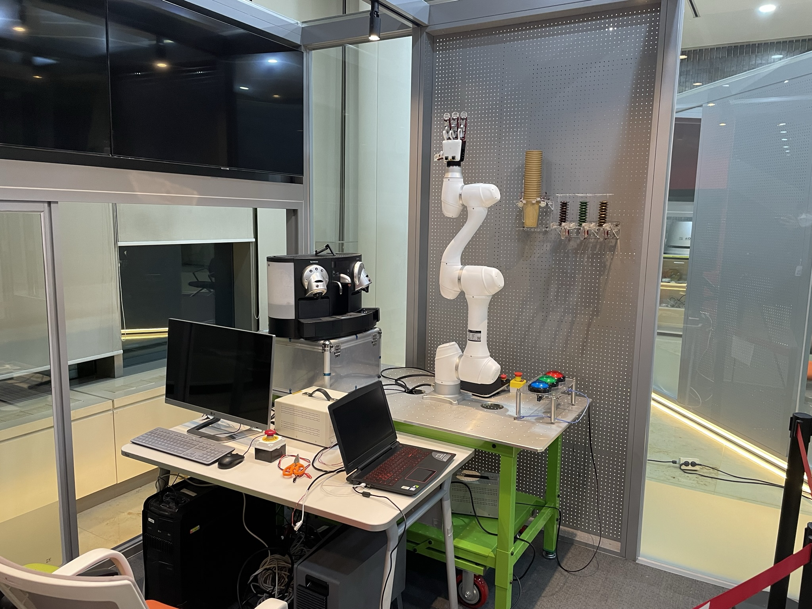

Project Overview
- Developed a demonstration robot integrating institution-specific technologies(Robotic Hand and AI-Kiosk)
- Provided capsule-type coffee service for VIP visitors (including former prime minister, politicians, entrepreneurs, professors, and children)
- Managed system integration development and maintenance project
Results
- Achieved the first fully integrated system within one month after receiving the equipment
- Achieved system stability through multiple demonstrations over about three years
- Utilized as an experimental platform for 'Robotic hand/wrist projects'
My Contribution
- System Integration
- Integrated robotic arm/hand, cup & capsule dispensers, and interactive Kiosk systems into a unified automation system
- Hardware/software setup (PC, robotic arm/hand, and dispensers)
- Data communication (TCP/IP, EtherCAT, Ethernet, Serial)
- Robotic arm positioning (Doosan Robotics A Series - API)
- Maintenance and Management
- Environment setup (Kiosk, coffee machine, ice-maker, interior design)
- Fault repair, sanitation, and equipment management
- Design and prototyping of dispensers
- Demo preparation and presentation
Project Media
Demonstration 1(KIST, Korea)
Demonstration 2(2023 RoboWorld, Korea)
Project Gallery
